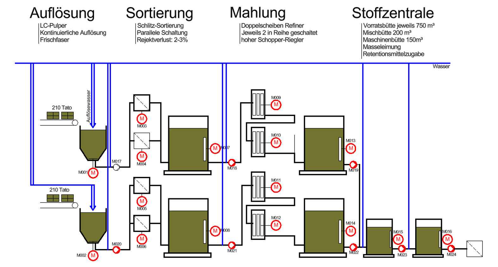
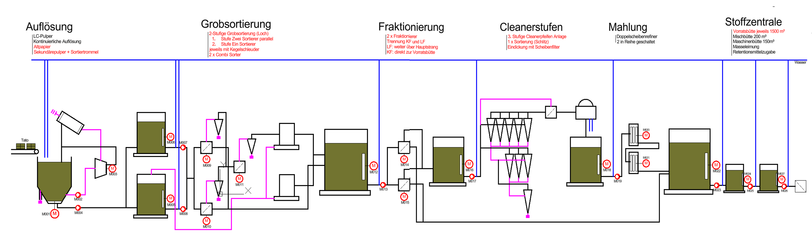

WProjekt · Universität
Effizienzsteigerung durch Umbau der Papiermaschine
Ein datenbasierter Plan zur Kapazitätssteigerung, Qualitätsverbesserung und nachhaltigen Produktion.
1. Problemstellung
- Bestehende Anlage verursacht Engpässe bei Durchsatz und Qualität.
- Wartungsaufwand und Ausfallzeiten sind überdurchschnittlich hoch.
- Energieverbrauch je Tonne Produkt ist zu groß.
Ziel: Wirtschaftlich, technisch und ökologisch tragfähige Lösung präsentieren.
2. Ist-Zustand
 Papiermaschine – Bestand
Papiermaschine – Bestand

Stoffaufbereitung – Bestand
3. Geplanter Umbau
 Papiermaschine – Umbau
Papiermaschine – Umbau

Stoffaufbereitung – Umbau
4. Nutzenversprechen
+18 % Durchsatz
Mehr Output bei gleicher Hallenfläche.
-12 % Energie
Geringere Kosten und CO₂-Last pro Tonne.
-20 % Stillstand
Stabilere Produktion und bessere Planbarkeit.
Werte als Beispiel – bitte mit euren realen Messdaten aus data.xlsx aktualisieren.
5. Wirtschaftlichkeit (Beispielrechnung)
| Kennzahl | Wert |
|---|
| Investition | 2,4 Mio. € |
| Jährlicher Mehrerlös | 0,95 Mio. € |
| Jährliche Einsparung | 0,38 Mio. € |
| Amortisationszeit | ~1,8 Jahre |
6. Umsetzungsplan
- Q2/2026: Detailengineering & Ausschreibung
- Q3/2026: Beschaffung & Vorfertigung
- Q4/2026: Montage während geplanter Abstellung
- Q1/2027: Inbetriebnahme & Ramp-up
7. Risiken & Gegenmaßnahmen
| Risiko | Auswirkung | Maßnahme |
|---|
| Lieferverzug | Terminverschiebung | Dual Sourcing, Pufferzeiten |
| Anlaufprobleme | Qualitätsverlust | Stufenweise Hochfahrt, Pilotbetrieb |
| Kostenanstieg | Budgetüberschreitung | Fixpreisanteile, Controlling |
8. Anlagen & Quellen
Tipp: In der finalen Abgabe alle Kennzahlen mit Quellenangabe versehen.
9. Fazit
Der Umbau ist technisch machbar, wirtschaftlich attraktiv und unterstützt die Nachhaltigkeitsziele.
- Kurze Amortisation
- Messbare Qualitäts- und Effizienzgewinne
- Skalierbares Konzept für weitere Optimierungen
10. Fragen?
Danke für eure Aufmerksamkeit.
Kontakt: dein.name@uni.de